8.3 异位妊娠
异位妊娠是指受精卵在宫腔外着床和发育 [15]。约98%的异位妊娠发生在输卵管，最常累及区域是输卵管壶腹部，其次是输卵管峡部 [16, 17]。
其他较少见的部位包括：
• 卵巢
• 腹部
• 子宫颈
• 复合妊娠（宫内妊娠与异位妊娠并存）
• 剖宫产瘢痕妊娠 [18]
临床表现包括以下几点：
主要症状：
• 出血：阴道出血通常发生在无经期之后。
• 疼痛：下腹痛是标志性症状。
- 休克：严重病例可能因破裂的异位妊娠 [19] 引起容量性休克。
实验室检查：
• 尿妊娠试验：阳性。
- 血清 $\beta$-hCG 水平：升高，但增加速率可能慢于正常的宫内妊娠。
8.3.1 输卵管妊娠
1. 临床概述
输卵管妊娠是指受精卵着床于输卵管内。
(1) 病理生理学：
输卵管壁薄、腔狭，无法支持发育中的胎儿。随着胚胎增大，该管可能要么
流产：导致妊娠组织部分排出。
破裂：这会导致严重的内出血。
(2) 临床表现：
输卵管流产：
• 轻度至中度腹痛。
- 可能有阴道出血，但不多。
8.3 Ectopic Pregnancy
Ectopic pregnancy occurs when a fertilized egg implants and develops outside the uterine cavity [15]. Approximately 98% of ectopic pregnancies occur in the fallopian tubes, with the most affected region being the oviductal ampulla, followed by the isthmus [16, 17].
Other less common sites include the following:
• Ovarian
• Abdominal
• Cervical
• Heterotopic (co-occurring intrauterine and ectopic pregnancy)
• Cesarean scar [18]
Clinical manifestations include the following:
Key symptoms:
• Bleeding: Vaginal bleeding often occurs after a period of amenorrhea.
• Pain: Lower abdominal pain is a hallmark symptom.
- Shock: Severe cases may present with hypovolemic shock due to ruptured ectopic pregnancy [19].
Laboratory findings:
• Urine pregnancy test: positive result.
- Serum $ \beta $-hCG levels: elevated, but the rate of increase may be slower than in normal intrauterine pregnancies.
8.3.1 Tubal Pregnancy
1. Clinical overview
Tubal pregnancy refers to the implantation of a fertilized egg within the fallopian tube.
(1) Pathophysiology:
The fallopian tube's thin walls and narrow lumen cannot support a developing fetus. As the embryo grows, the tube may either
Miscarry: Resulting in partial expulsion of the pregnancy tissue.
Rupture: This leads to significant internal bleeding.
(2) Clinical presentations:
Tubal miscarriage:
• Mild-to-moderate abdominal pain.
- Vaginal bleeding may be present but is not excessive.
输卵管破裂：
• 剧烈腹痛，常突发
- 内出血引起的低血容量症状，如头晕或昏厥
• 在许多情况下伴有贫血
“陈旧性”输卵管妊娠：
• 长期不规则阴道出血史。
最初剧烈的腹痛，逐渐发展为慢性、隐匿的不适。
由于其微妙和持续的性质，它可能模仿其他妇科疾病。
2. 典型的超声特征
(1) 一般发现：
- 子宫形态饱满，子宫内膜增厚，但宫腔内无孕囊。
• 在某些情况下，宫腔内可见假孕囊。
在附件区，常可发现与卵巢相对活动度高、触诊时有明显压痛的肿块。
可能存在盆腔积液，提示可能发生破裂或内出血。
(2) 经阴道超声对输卵管妊娠的超声表现 [13, 18, 20, 21]:
(a) 附件肿块
可见卵巢外占位，可能包含卵黄囊和/或胚芽，有无心搏动。
孕囊呈壁厚、高回声的囊肿，中心为无回声，形成特征性的“甜甜圈征”。
在CDFI显示，一个“火环”样改变包绕着孕囊，代表滋养层血流。
在此阶段，盆腔和腹腔积液很少或没有（图8.12）。
对于破裂的孕囊：
在附件区可见不规则、混杂回声肿块，难以辨认“甜甜圈征”。
CDFI 显示肿块内有点状血流信号，伴有偶发的滋养层样血流。
在盆腔和腹腔内检测到大量游离液体。
该液体通常含有致密的点状或混浊的回声模式，表明有出血（图 8.13）。
(b) 假囊
假囊（在约20%的异位妊娠中可见）表现为子宫内膜腔内的液体积聚，常模拟小的孕囊。
假囊是异质性的，含有血液和碎片。
它缺乏真宫内孕囊的双环征和其他明确特征。
Tubal rupture:
• Severe abdominal pain, often sudden in onset
- Signs of hypovolemia, such as dizziness or fainting, due to internal bleeding
• Accompanied by anemia in many cases
“Old” tubal pregnancy:
• Prolonged history of irregular vaginal bleeding.
Initial severe abdominal pain, evolving into chronic, insidious discomfort.
It may mimic other gynecological conditions due to its subtle and persistent nature.
2. Typical ultrasonic features
(1) General findings:
- The uterus appears morphologically plump with thickened endometrium, but no gestational sac is present within the uterine cavity.
• In some cases, a pseudogestational sac may be visible in the uterine cavity.
In the adnexal region, masses with relative mobility to the ovaries and significant tenderness upon palpation are commonly detected.
Pelvic effusion may be present, indicating potential rupture or internal bleeding.
(2) Sonographic findings of tubal pregnancy on 2D ultrasound [13, 18, 20, 21]:
(a) Adnexal mass
An extraovarian mass is observed, which may include a yolk sac and/or a fetal pole, with or without cardiac motion.
The gestational sac appears as a thick-walled, hyperechogenic sac with an anechoic center, creating the characteristic “bagel sign.”
On CDFI, a “ring of fire” pattern surrounds the gestational sac, representing trophoblastic blood flow.
At this stage, pelvic and abdominal fluid accumulation is minimal or absent (Fig. 8.12).
In the case of a ruptured gestational sac:
An irregular, mixed-echoic mass is seen in the adnexal region, making the “bagel sign” difficult to distinguish.
CDFI shows punctate blood flow signals within the mass, with occasional trophoblastic-like blood flow.
A significant amount of free fluid is detected in the pelvic and abdominal cavities.
This fluid often contains dense punctate or cloudy echo patterns, indicative of hemorrhage (Fig. 8.13).
(b) Pseudosac
A pseudosac (seen in about 20% of ectopic pregnancies) appears as a fluid collection within the endometrial cavity, often mimicking a small gestational sac.
The pseudosac is heterogeneous, containing blood and debris.
It lacks the double-ring sign and other definitive features of a true intrauterine gestational sac.
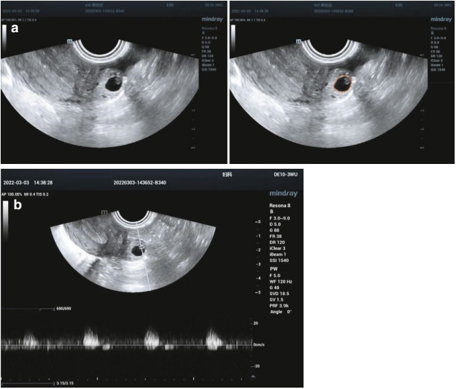
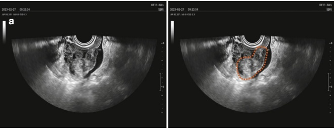
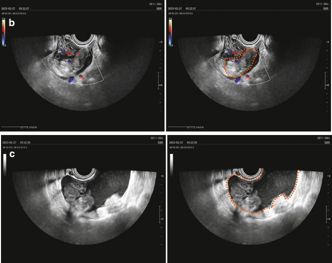
3. 鉴别诊断
(1) 异位妊娠破裂与黄体破裂的鉴别：
黄体破裂的特点如下：
它通常发生在月经周期的后期，且没有漏经史。
它通常表现为腹痛突然发作伴大量内出血。
超声检查结果：
• 子宫未见明显增大。
受累的卵巢增大，可见不规则、混杂回声肿块。
盆腔和腹腔内可见液体积聚（血性腹腔积液）。
实验室检查：血清 $\beta$-hCG 和尿妊娠试验阴性。
(2) 输卵管妊娠伴子宫内积血与不全流产：不全流产：
不全流产的超声表现：
- 存在畸形的宫内孕囊或异质性组织。
3. Differential diagnosis
(1) Rupture of ectopic pregnancy vs. rupture of the corpus luteum:
upture of corpus luteum features the following:
It typically occurs late in the menstrual cycle without a history of missed menstruation.
It often manifests as a sudden onset of abdominal pain with massive internal bleeding.
Ultrasound findings:
• The uterus is not significantly enlarged.
The affected ovary is enlarged and displays an irregular, mixed echogenic mass.
Fluid accumulation (hemoperitoneum) may be seen in the pelvic and abdominal cavities.
Laboratory findings: Serum $ \beta $-hCG and urine pregnancy tests are negative.
(2) Tubal pregnancy with intrauterine blood accumulation vs. incomplete miscarriage: Incomplete miscarriage:
Ultrasound findings of an incomplete miscarriage:
- A deformed intrauterine gestational sac or heterogeneous tissue is present.
包绕孕囊的强回声环看起来变薄，回声减弱，类似于输卵管妊娠伴子宫内血积聚所见的假孕囊。
关键鉴别点：双侧附件区未见肿块，排除输卵管妊娠。
8.3.2 输卵管间质部妊娠和宫角妊娠
1. 临床概述
输卵管间质部妊娠:
• 占异位妊娠的 2–4% [22]。
着床发生在近端输卵管起源处的子宫肌层，并位于圆韧带外侧。
该区域较强的扩张能力使其与远端输卵管妊娠相比，可以进展到更晚期的妊娠。
破裂会导致大量失血和发病率升高，死亡率高达2.5% [17]。
宫角妊娠：
这是一种罕见的宫内妊娠，胚胎着床于子宫内膜腔的宫角上和外侧，位于子宫输卵管交界处内侧 [22]。
由于靠近子宫-输卵管交界处，常与输卵管间质部妊娠混淆。
一种可能足月妊娠并分娩活胎的妊娠 [22]。
2. 典型的超声特征
输卵管间质部妊娠:
• 子宫内膜增厚，宫腔内无孕囊。
- 从子宫底一侧突出，含有结构化的孕囊。
• 孕囊周围的子宫肌层极少。
子宫角处的内膜线呈闭合状，子宫内膜与肿块之间无连续性。
可见一条薄的、回声增强的线，从子宫内膜腔向侧方延伸，穿过子宫肌层，直至子宫浆膜（图8.14）。
宫角妊娠：
一个植入在子宫侧角的孕囊，可能略微突出。
孕囊完全被环状子宫内膜包绕 [23]（图 8.15）。
3. 鉴别诊断
输卵管间质部妊娠与角状妊娠：
宫角妊娠的孕囊：
• 位于宫腔内。
• 完全被子宫内膜包绕。
The hyperechogenic ring surrounding the gestational sac appears thinned and reduced in echogenicity, resembling the pseudogestational sac seen in tubal pregnancy with intrauterine blood accumulation.
Key differentiation: No mass is detected in the bilateral adnexal regions, ruling out tubal pregnancy.
8.3.2 Interstitial Pregnancy and Angular Pregnancy
1. Clinical overview
Interstitial pregnancy:
• Accounts for 2–4% of ectopic pregnancies [22].
Implantation occurs at the origin of the proximal fallopian tube within the myometrium and lateral to the round ligament.
The increased expansibility of this region allows progression to later gestations compared to distal tubal pregnancies.
Rupture results in significant blood loss and morbidity, with mortality rates up to 2.5% [17].
Angular pregnancy:
This is a rare condition in which the embryo implants in the endometrial cavity at the superior and lateral angle, medial to the utero-tubal junction [22].
Often confused with interstitial pregnancy due to proximity to the utero-tubal junction.
A potentially viable pregnancy that might be carried to term with a live-born baby [22].
2. Typical ultrasonic features
Interstitial pregnancy:
• Thickened endometrium with no gestational sac in the uterine cavity.
- Mass protruding outward from one side of the uterine fundus containing a structured gestational sac.
• The gestational sac has minimal surrounding uterine muscle.
The endometrial line appears closed at the uterine horn, with no continuity between the endometrium and the mass.
A thin echogenic line is visible, extending laterally from the endometrial cavity through the myometrium toward the uterine serosa (Fig. 8.14).
Angular pregnancy:
A gestational sac implanted in the lateral angle of the uterus, possibly protruding slightly.
The gestational sac is entirely surrounded by circumferential endometrium [23] (Fig. 8.15).
3. Differential diagnosis
Interstitial pregnancy vs. angular pregnancy:
Gestational sac in angular pregnancy:
• Located within the uterine cavity.
• Completely surrounded by endometrium.
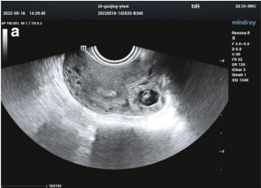

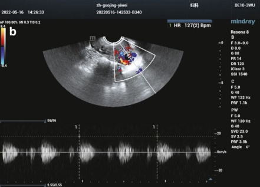
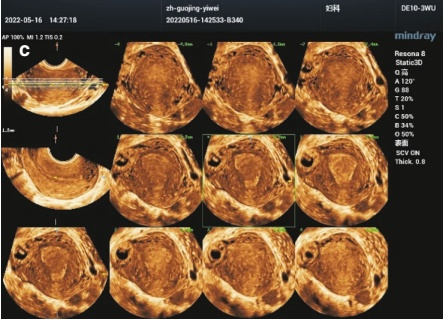
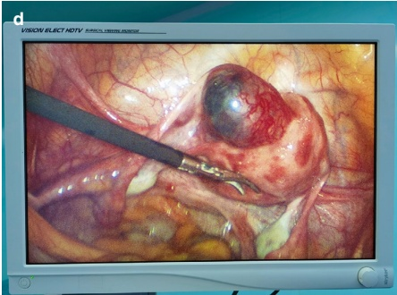
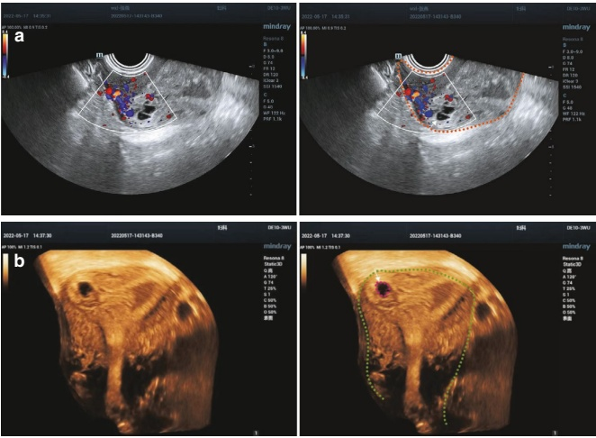
孕囊 in 输卵管间质部妊娠:
• 位于子宫肌层，不在宫腔内。
• 被子宫肌层包绕，而非子宫内膜。
8.3.3 宫颈异位妊娠
1. 临床概述
宫颈异位妊娠是指孕囊植入并发育于宫颈管黏膜。它占所有异位妊娠的<1% [21]。
风险因素包括以下几项：
• 既往子宫手术史
• ART
阿舍曼综合征 [24]
临床表现：
- 月经停止和早期妊娠的病史。
• 特征症状：无痛阴道出血。
- 妇科检查可能发现宫颈明显增大。
- 典型的超声特征
心形子宫，宫颈管充盈。
宫颈内的妊娠组织，无子宫内妊娠组织 [17]。
“8字形”模式：在空化的内膜腔和宫颈妊娠之间可见一个阴道穹窿桥。
当用探头轻压时，孕囊无活动性。
彩色多普勒显示宫颈区域周围有高血供的滋养层环，提示活胎宫颈异位妊娠（图 8.16）。
3. 鉴别诊断
宫颈异位妊娠与流产的鉴别：
宫颈妊娠可能被误诊为孕囊脱落至宫颈管的流产。
对于流产：
原本位于宫腔内的孕囊发生畸形并向下移位。
在胚胎中不会检测到胎心搏动。
• 宫颈大小正常。
• 内宫颈口张开。
- 未见宫颈肌层有低阻力营养血流信号。
Gestational sac in interstitial pregnancy:
• Located outside the uterine cavity in the myometrium.
• Surrounded by myometrium, not endometrium.
8.3.3 Cervical Ectopic Pregnancy
1. Clinical overview
Cervical ectopic pregnancy occurs when the gestational sac implants and develops within the mucosa of the endocervical canal. It represents <1% of all ectopic pregnancies [21].
Risk factors include the following:
• Previous uterine surgeries
• ART
Asherman's syndrome [24]
Clinical manifestations:
- History of menstrual cessation and early pregnancy signs.
• Characteristic symptom: painless vaginal bleeding.
- A gynecologic exam may reveal significant enlargement of the cervix.
- Typical ultrasonic features
Hourglass-shaped uterus with ballooning of the cervical canal.
Gestational tissue within the cervix, with no intrauterine gestational tissue [17].
“8-shape” pattern: A bridge of the endocervical canal is seen between the empty endometrial canal and the cervical pregnancy.
The gestational sac is non-mobile when gentle pressure is applied with the transducer.
Color Doppler shows a hypervascular trophoblastic ring around the cervical region, indicating a live cervical ectopic pregnancy (Fig. 8.16).
3. Differential diagnosis
Cervical ectopic pregnancy vs. miscarriage:
Cervical pregnancies can be mistaken for miscarriages where the gestational sac has fallen into the cervical canal.
In the case of a miscarriage:
The gestational sac that was originally located within the uterine cavity becomes deformed and moves downward.
No fetal heartbeats will be detected in the embryo.
• The cervix remains of normal size.
• The endocervical os is open.
- No low-resistance nourishing blood flow signals are seen in the muscle layer of the cervix.
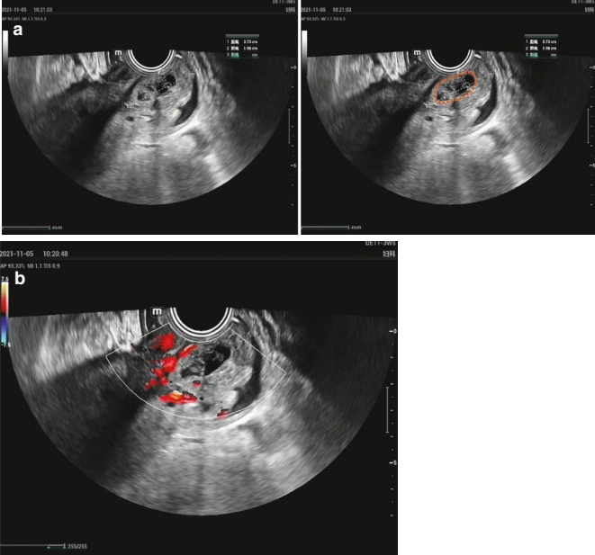
8.3.4 剖宫产瘢痕妊娠 (CSP)
1. 临床概述
剖宫产瘢痕妊娠（CSP）是一种罕见但严重的并发症，其中早期妊娠植入于既往剖宫产留下的瘢痕中。只有当存在瘢痕憩室（瘢痕组织中的小缺损）时才会发生CSP；完全愈合的剖宫产瘢痕不能发生[25]。
临床表现包括以下几点：
• 剖宫切开术病史
• 月经停止
• 血清和尿液妊娠试验呈阳性
• 阴道出血不规则，有时伴或不伴下腹痛
2. 典型的超声特征
评估是否存在剖宫产瘢痕妊娠（CSP）的首次超声检查建议在孕6至7周进行，采用经阴道超声 [26]。CSP的诊断最佳方法是
8.3.4 Cesarean Scar Pregnancy (CSP)
1. Clinical overview
Cesarean Scar Pregnancy (CSP) is a rare but serious complication in which an early pregnancy implants in the scar left by a prior cesarean section. CSP can only occur if a niche (a small defect in the scar tissue) is present; it cannot occur in a completely healed cesarean scar [25].
Clinical manifestations include the following:
• History of a cesarean section
• Cessation of menstruation
• Positive serum and urine pregnancy t
• Irregular vaginal bleeding, sometimes with or without lower abdominal pain
2. Typical ultrasonic features
The first ultrasound to assess for CSP is recommended between 6 and 7 weeks gestation, using transvaginal ultrasound [26]. The diagnosis of CSP is best con-
在妊娠第8周前确认，因为此后孕囊可能向上生长至子宫穹窿。
评估时应包括以下基本超声特征：
• 孕囊大小
• 血流信号
• 与子宫血管的关系位置
• 残余子宫肌层的厚度
• 妊娠相对于宫腔和浆膜的位置 经超声的诊断标准包括以下[27]：
(1) 宫腔呈空腔，宫颈管闭合。
(2) 早期孕囊和/或胎盘位于剖宫切口瘢痕/窝附近。这可能包括可见胎极和/或卵黄囊，有无可检测到的胎心搏动，取决于孕周。在孕周小于7周时，孕囊可能会适应其着床的窝的形状。
(3) 孕囊与前宫壁或膀胱之间子宫肌层减少或缺失。
(4) 多普勒超声显示孕囊周围有丰富的滋养层周围血流（图 8.17）。
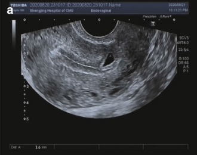
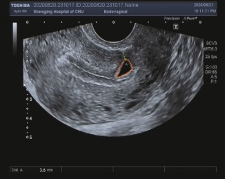
firmed before 8 weeks gestation, as the gestational sac may grow toward the uterine fundus after this period.
Essential sonographic features to assess include the following:
• Gestational sac size
• Vascularity
• Location in relation to the uterine vessels
• Thickness of the residual myometrium
• Location of the pregnancy in relation to the uterine cavity and serosa Sonographic criteria include the following [27]:
(1) A uterine cavity that appears empty, with a closed endocervical canal.
(2) The presence of an early gestational sac and/or placenta located near the cesarean scar/niche. This may include the visualization of a fetal or embryonic pole and/or yolk sac, with or without detectable fetal heartbeat, depending on the gestational age. Before 7 weeks of gestation, the gestational sac may adapt to the shape of the niche where it implants.
(3) A reduced or absent myometrial layer between the gestational sac and the anterior uterine wall or bladder.
(4) Doppler ultrasound shows significant blood flow surrounding the gestational sac with rich peritrophoblastic blood flow (Fig. 8.17).
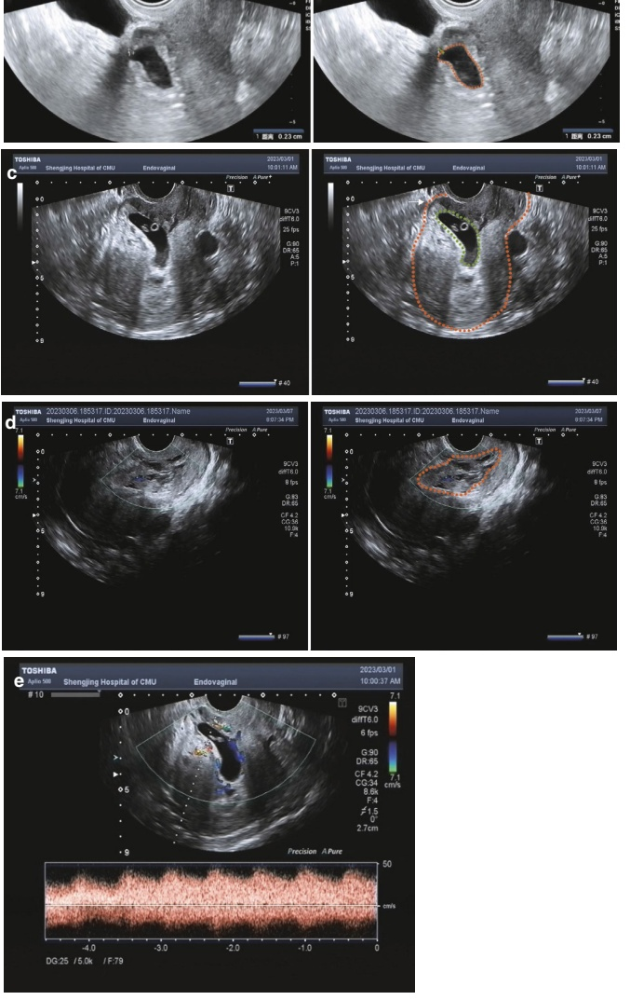
3. 鉴别诊断
剖宫产瘢痕妊娠应与正常妊娠低着床、宫颈异位妊娠和进展性流产鉴别。关键的鉴别因素包括患者的病史，特别是既往剖宫产史、孕囊的位置及其与剖宫产瘢痕的接近程度。
4. 临床管理
治疗方案包括期待管理、药物治疗、手术和介入治疗 [28]。甲氨蝶呤（MTX）是药物治疗的首选药物。手术治疗通常包括超声引导下的刮宫，随后进行妊娠物取出和子宫瘢痕修复。子宫动脉栓塞是另一种具有独特优势的介入选择。
8.3.5 腹腔异位妊娠
1. 临床概述
腹部异位妊娠是指妊娠植入于腹膜腔内，不在宫腔和输卵管内 [29]。 与输卵管异位妊娠不同，腹腔妊娠往往要到更晚的孕期才会被发现。 诊断标准包括以下几点：
(1) 正常的输卵管和卵巢，无输卵管或卵巢妊娠的迹象
(2) 无子宫-腹膜瘘
(3) 妊娠完全位于腹腔内，排除输卵管妊娠
次性腹部妊娠通常是由于输卵管或卵巢妊娠破裂或流产所致。 在临床上，患者可能表现为早孕期贫血、突发和剧烈的腹痛以及少量阴道出血，通常伴有月经推迟病史。 腹部妊娠的异常胎盘附着导致血供不足，使胎儿足月存活的可能性降低。 在胎儿临产时，子宫轮廓难以触诊，但胎儿肢体可能清晰可触及，通常伴有可测到的胎心搏动。
2. 典型的超声特征
包括以下几项：
宫腔内无孕囊或中晚期妊娠时难以观察到标准的超声特征。
在晚期腹腔异位妊娠中，妊娠囊或羊膜囊缺乏特征性的厚实、光滑的低回声子宫壁，胎儿似乎直接与母体腹壁接触。
• 胎儿死亡时，胎儿体征在影像学上变得模糊不清。
- 由于羊水过少，胎盘表现为不规则、异质的混响性肿块伴多发粘连（图 8.18）。
3. Differential diagnosis
A cesarean scar pregnancy should be differentiated from low implantation of a normal pregnancy, cervical ectopic pregnancy, and evolving pregnancy loss. Key factors for differentiation include the patient's clinical history, particularly prior cesarean section, the location of the gestational sac, and its proximity to the cesarean scar.
4. Clinical management
Treatment options include expectant management, pharmacologic therapy, surgery, and interventional therapy [28]. Methotrexate (MTX) is the drug of choice for pharmacologic therapy. Surgical treatment often involves ultrasound-guided curettage followed by pregnancy removal and uterine scar repair. Uterine artery embolization is another interventional option with unique advantages.
8.3.5 Abdominal Ectopic Pregnancy
1. Clinical overview
Abdominal ectopic pregnancy refers to the implantation of a pregnancy within the peritoneal cavity, outside the uterine cavity, and fallopian tubes [29]. Unlike tubal ectopic pregnancies, abdominal pregnancies can often remain undetected until a later gestational stage. Diagnostic criteria include the following:
(1) Normal fallopian tubes and ovaries with no signs of tubal or ovarian pregnancy
(2) Absence of a utero-peritoneal fistula
(3) Exclusive location of the pregnancy within the abdominal cavity, ruling out tubal pregnancy
Secondary abdominal pregnancies typically result from a ruptured or miscarried tubal or ovarian pregnancy. Clinically, patients may present with anemia, sudden and severe abdominal pain, and minimal vaginal bleeding during early pregnancy, often accompanied by a history of missed menstruation. The abnormal placental attachment in abdominal pregnancies leads to poor blood supply, making fetal survival to term unlikely. In rare cases where the fetus reaches term, uterine contours are difficult to palpate, but fetal limbs may be distinctly palpable, often accompanied by detectable fetal heartbeats.
2. Typical ultrasonic features
These include the following:
Absence of a gestational sac in the uterine cavity or difficulty visualizing standard sonographic features in mid-to-late-term pregnancies.
In advanced abdominal ectopic pregnancies, the gestational or amniotic sac lacks the characteristic thick, smooth, hypoechoic muscular uterine wall, and the fetus appears to be in direct contact with the maternal abdominal wall.
• In cases of fetal demise, the fetal body becomes poorly defined on imaging.
- Due to limited amniotic fluid, the placenta appears as an irregular, heterogeneous echogenic mass with multiple adhesions (Fig. 8.18).
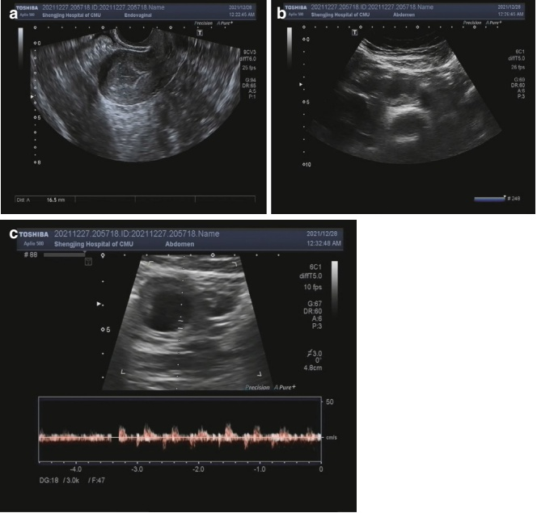
3. 鉴别诊断
(1) 输卵管妊娠
将早期腹腔异位妊娠与输卵管妊娠区分开来通常具有挑战性。然而，位于盆腔外的腹腔性异位妊娠——例如脾肾间或肝肾间——比输卵管妊娠更容易区分。
(2) 原发性角妊娠
在更晚的孕周，原发性角妊娠可能被误认为腹膜外妊娠。这是因为原发性角妊娠中包绕着孕囊的薄低回声肌层可能类似于腹膜外妊娠中的腹膜和大网膜包裹。然而，多切面扫描可以显示该原发性角与子宫的连接，而腹膜外妊娠则没有这一特征。
3. Differential diagnosis
(1) Tubal pregnancy
Differentiating an early abdominal ectopic pregnancy from a tubal pregnancy is often challenging. However, abdominal ectopic pregnancies located outside the pelvis—such as between the spleen and kidney or between the liver and kidney—are more easily distinguished from a tubal pregnancy.
(2) Rudimentary horn pregnancy
At a later gestational age, a rudimentary horn pregnancy can be mistaken for an abdominal pregnancy. This is because the thin hypoechoic muscular layer surrounding the gestational sac in a rudimentary horn pregnancy may resemble the peritoneal and greater omental wrappings of abdominal pregnancy. Multisection scanning, however, can reveal the rudimentary horn's connection to the uterus, a feature absent in abdominal pregnancies.
4. 临床管理
手术干预是腹部异位妊娠的主要治疗方法。这一点至关重要，因为移除异常着床的胎盘可能导致大量出血。
8.3.6 卵巢妊娠
1. 临床概述
卵巢妊娠是一种罕见的异位妊娠，胚胎植入于卵巢组织内。常见的临床症状包括以下几项：
• 月经缺失
• 腹痛
• 阴道出血
由于卵巢维持不断增长的妊娠容量有限，破裂通常发生在早期。
2. 典型的超声特征
在未破裂的卵巢妊娠中，受累的卵巢看起来肿大且形状不规则，可见一个可能或不可能含有胎儿结构的孕囊。 破裂后，超声通常显示一个异质性回声肿块，形态不规则，边界不清，难以与破裂输卵管妊娠或黄体囊肿鉴别（图 8.19）。 一个关键的鉴别特征是在触诊时无法将妊娠与卵巢分开。彩色多普勒成像对于识别与黄体不同的滋养层周围血流至关重要 [30]。 CDFI突出了卵巢周围孕囊丰富的低阻力血流信号。
3. 鉴别诊断
(1) 输卵管妊娠
卵巢妊娠表现为与卵巢牢固粘连的肿块（无滑动征），而未破裂的输卵管妊娠不具有此特征。区分破裂的卵巢妊娠和破裂的输卵管妊娠可能具有挑战性。 然而，在破裂输卵管妊娠后，经阴道超声可看到正常的卵巢，而在破裂卵巢妊娠中，则无法识别出卵巢。
(2) 黄体
黄体通常显示环周性或半环周性的血流信号，阻力指数（RI）约为0.5，而卵巢妊娠则表现为局灶性血流信号。 两者之间的RI值有相当大的重叠，因此应关注肿块的内部回声。如果肿块的回声更
4. Clinical management
Surgical intervention is the primary treatment for abdominal ectopic pregnancy. This is crucial information, as removing an abnormally implanted placenta can cause significant bleeding.
8.3.6 Ovarian Pregnancy
1. Clinical overview
Ovarian pregnancy is a rare form of ectopic pregnancy where the embryo implants within ovarian tissue. Common clinical symptoms include the following:
• Missed menstruation
• Abdominal pain
• Vaginal bleeding
Due to the limited capacity of the ovary to sustain a growing pregnancy, rupture often occurs at an early stage.
2. Typical ultrasonic features
In unruptured ovarian pregnancy, the affected ovary appears enlarged and irregularly shaped, with a visible gestational sac that may or may not contain fetal structures. After rupture, ultrasound typically reveals a heterogeneous echogenic mass with irregular morphology and poorly defined borders, making differentiation from a ruptured tubal pregnancy or corpus luteum challenging (Fig. 8.19). A key distinguishing feature is the inability to separate the pregnancy from the ovary on palpation. Color Doppler imaging is essential to identify peritrophoblastic blood flow distinct from the corpus luteum [30]. CDFI highlights abundant low-resistance blood flow signals surrounding the gestational sac within the ovary.
3. Differential diagnosis
(1) Tubal pregnancy
Ovarian pregnancy presents as a mass firmly attached to the ovary (no sliding sign), whereas an unruptured tubal pregnancy does not exhibit this feature. Distinguishing between a ruptured ovarian pregnancy and a ruptured tubal pregnancy can be challenging. However, following a ruptured tubal pregnancy, a normal ovary may be visible on transvaginal ultrasound, whereas in a ruptured ovarian pregnancy, the ovary is not identifiable.
(2) Corpus luteum
A corpus luteum typically shows circumferential or semicircumferential blood flow signals with a resistive index (RI) of approximately 0.5, while ovarian pregnancies present focal blood flow signals. There is considerable overlap in RI values between the two, so attention should be given to the internal echogenicity of the mass. If the echogenicity of the mass is higher
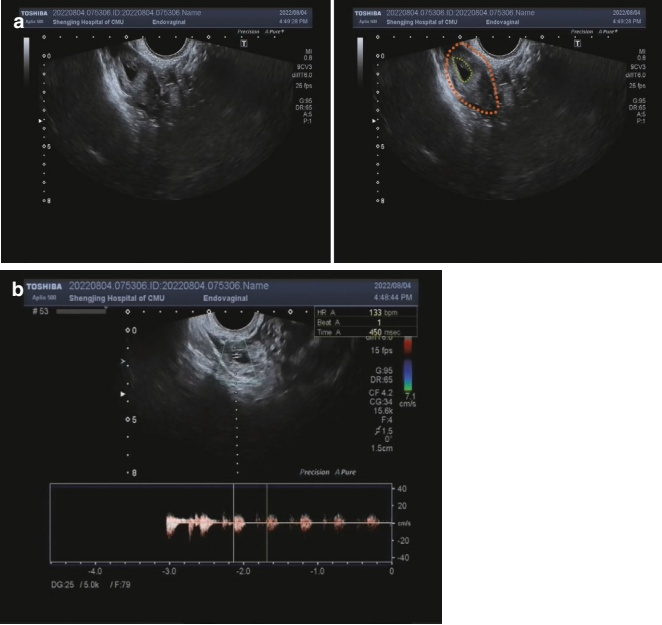
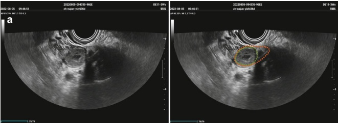
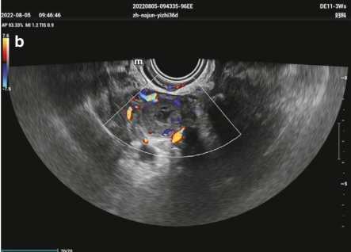
而非卵巢实质，这提示为卵巢妊娠。相反，黄体通常是一个低回声肿块（图8.20）。
4. 临床管理
卵巢妊娠通常通过手术切除受累的卵巢来处理。对于未破裂的卵巢妊娠，可考虑使用药物治疗作为替代方案。
8.3.7 异位妊娠（HP）
1. 临床概述
异位妊娠（HP）是指子宫内妊娠与异位妊娠共存。在普通人群中，HP的发生率约为每30,000例妊娠中有1例 [31]。然而，对于接受辅助生殖技术（ART）的患者，例如药物诱导排卵或IVF-ET，其患病率上升至1–3% [32]。随着选择单胚胎移植策略的使用增加，HP的发生率已有所下降 [33, 34]。
2. 典型的超声特征
复合妊娠（HP）可发生在不同部位，包括子宫角、宫颈和剖宫产瘢痕等，每个部位的超声表现都有其独特的特征。 即使观察到子宫内孕囊，也必须保持高度警惕对异位妊娠的怀疑。有必要仔细检查子宫角和附件区。 此外，宫外孕囊的发育可能落后于子宫内的囊。当患者有卵巢黄体囊肿或卵巢过度刺激综合征时，异位妊娠的肿块可能会被遮盖（图 8.21）。
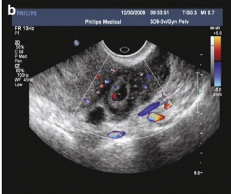
than that of the ovarian parenchyma, this suggests an ovarian pregnancy. Conversely, a corpus luteum is usually a hypoechoic mass (Fig. 8.20).
4. Clinical management
Ovarian pregnancies are typically managed through surgical removal of the affected ovary. In cases of unruptured ovarian pregnancy, conservative treatment with pharmacological therapy may be considered as an alternative.
8.3.7 Heterotopic Pregnancy (HP)
1. Clinical overview
Heterotopic pregnancy (HP) refers to the coexistence of an intrauterine pregnancy alongside an ectopic pregnancy. In the general population, the incidence of HP is approximately 1 in 30,000 pregnancies [31]. However, in patients who undergo ART, such as drug-induced ovulation or IVF-ET, the prevalence rises to 1–3% [32]. With the increasing use of selective single-embryo transfer strategies, the incidence of HP has decreased [33, 34].
2. Typical ultrasonic features
HP can involve ectopic pregnancies located in different sites, including the uterine horn, cervix, and cesarean scar, each presenting distinct sonographic features. It is essential to maintain a high level of suspicion for ectopic pregnancy, even when an intrauterine gestational sac is observed. A thorough examination of the uterine horns and adnexal areas is necessary. Additionally, the extrauterine gestational sac development may lag behind the intrauterine sac. In cases where the patient has an ovarian corpus luteum cyst or ovarian hyperstimulation syndrome, the ectopic pregnancy mass may be obscured (Fig. 8.21).